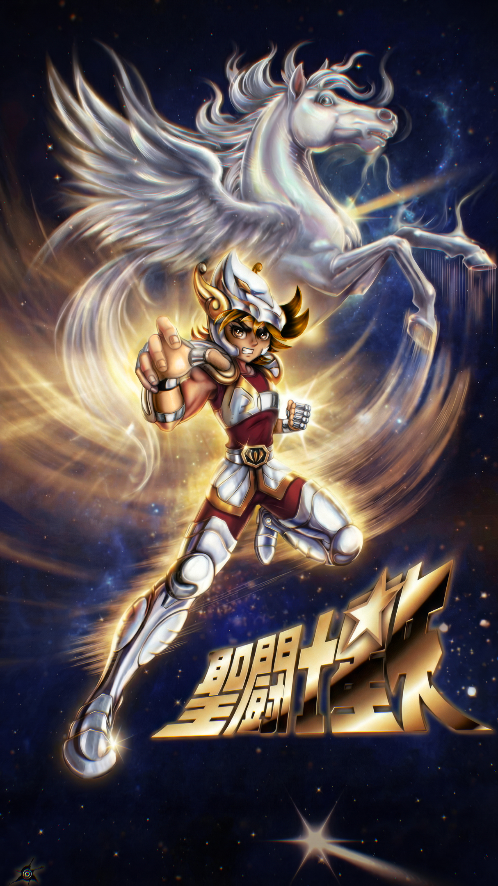
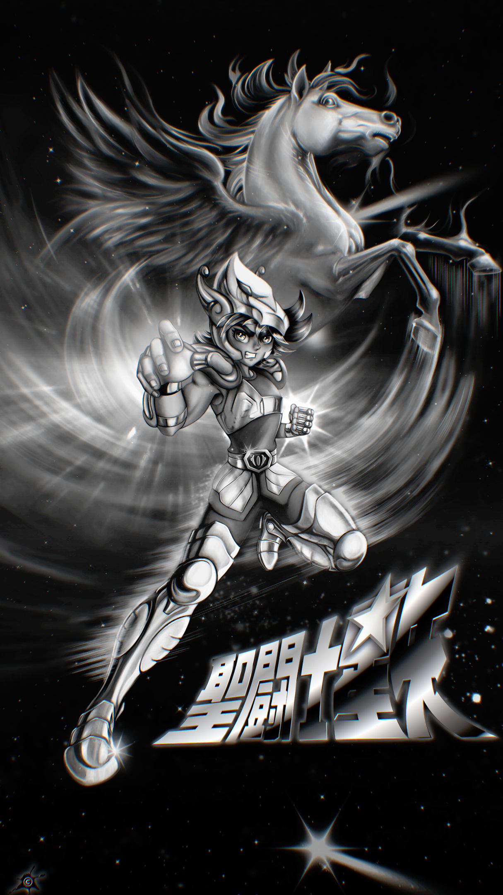
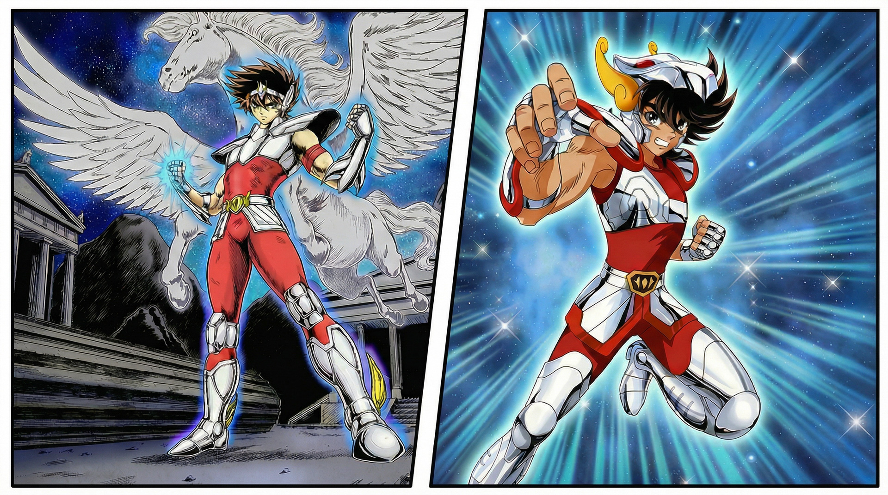

Original Composition • Dynamic Pose • Photoshop & After Effects • Lighting & Value Exploration

A manga-inspired fan art piece celebrating the iconic Knights of the Zodiac series. I created this illustration to teach students, using an original composition and dynamic pose study while remaining faithful to the distinctive Saint Seiya visual style. The project demonstrates lighting reinterpretation and value exploration, combining Photoshop illustration with an After Effects animated clip to create a polished tribute to the series.

